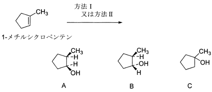

酸触媒水和とヒドロホウ素化の作り分け｜マルコフニコフとアンチマルコフニコフ 有機化学及び燃料
1-メチルシクロペンテンから方法Ⅰ又は方法Ⅱによりメチルシクロペンタノールを合成したとき、それぞれの方法から主生成物として得られる化合物として、最も適切なものはどれか。
方法Ⅰ）酸触媒水和反応
方法Ⅱ）ヒドロホウ素化と塩基性過酸化水素水による酸化

酸触媒水和はマルコフニコフ付加、ヒドロホウ素化と酸化はアンチマルコフニコフ付加です。この問題では、OHが付く炭素と、メチル基に対するOHの立体配置が判断の基準です。
方法Ⅰの酸触媒水和では、プロトン付加により、メチル基が結合した炭素に第三級カルボカチオンが生じます。ここに水が付加し、脱プロトン化すると、生成物は同じ炭素にメチル基とOHを持つCです。
方法Ⅱのヒドロホウ素化は、HとBが二重結合の同じ側から入るシン付加です。Bは置換の少ない炭素に結合し、酸化によってC–B結合が立体配置を保ったままC–OH結合に変わります。メチル基の反対側からの付加が優先するため、メチル基とOHがtransのBが主生成物です。Aはメチル基とOHがcisなので該当しません。
1番は方法ⅠをAとしている点が誤りです。方法ⅡのBは合っています。
2番は方法Ⅰと方法Ⅱのどちらも合いません。方法ⅠはC、方法ⅡはBです。
3番のC／Bが適切な組合せです。方法ⅠはOHが置換の多い炭素に、方法Ⅱは置換の少ない炭素に付加します。
4番は両方法の生成物が逆です。
5番は方法ⅠのCは合っていますが、方法ⅡのAが誤りです。シン付加するのは新たに入るHとBであり、出発物質のメチル基とOHがcisになるという意味ではありません。
関連するオキシ水銀化・脱水銀化もマルコフニコフ型の水和です。水銀塩が二重結合に付加して架橋したマーキュリニウムイオンを作り、水が置換の多い炭素を攻撃します。続いてNaBH4などで炭素に結合した水銀基をHに置き換えるため、この基質ではCが得られます。